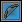
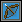
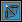
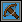
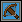

Creación de armas
Ejemplos mínimos por tipo de item. Todos comparten type, tiers y
display; solo cambia la plantilla y los argumentos del modelo.
Espada (item handheld)
Una espada normal usa la plantilla model_path y un modelo handheld:
items:
custom_tiers:mi_espada:
material: diamond_sword
template:
- custom_tiers:tiers
arguments:
type: model_path
tiers: 3
display: rare
model_path: minecraft:item/diamond_sword
Si usas un modelo propio del tipo espada, su JSON debe tener "parent": "minecraft:item/handheld".
Arco
El arco necesita el modelo normal y los tres estados de tensado:
items:
custom_tiers:mi_arco:
material: bow
template:
- custom_tiers:tiers
arguments:
type: model_path_bow
tiers: 3
display: rare
model_path: minecraft:item/bow


Agrega estas 3 lineas
arguments:
pulling_0: minecraft:item/bow_pulling_0
pulling_1: minecraft:item/bow_pulling_1 # el addon las autocompleta con
pulling_2: minecraft:item/bow_pulling_2 # "model_path" + "_pulling_<0-2>
# ALIAS
# model_path_pulling_X: minecraft:item/bow_pulling_X
Ballesta
La ballesta añade los estados de cargada con flecha y con cohete:
items:
custom_tiers:mi_ballesta:
material: crossbow
template:
- custom_tiers:tiers
arguments:
type: model_path_crossbow
tiers: 3
display: rare
model_path: minecraft:item/crossbow

Agrega estos argumentos según lo que necesites
arguments:
arrow: minecraft:item/crossbow_arrow
firework: minecraft:item/crossbow_firework
pulling_0: minecraft:item/crossbow_pulling_0
pulling_1: minecraft:item/crossbow_pulling_1
pulling_2: minecraft:item/crossbow_pulling_2
# ALIAS
#model_path_arrow: minecraft:item/crossbow_arrow
#model_path_firework: minecraft:item/crossbow_firework
#model_path_pulling_X: minecraft:item/crossbow_pulling_X
Tridente
Para un tridente con modelos existentes:
items:
custom_tiers:mi_tridente:
material: trident
template:
- custom_tiers:tiers
arguments:
type: trident_model_path
tiers: 3
display: rare
model_path: custom_tiers:item/my_trident
Si prefieres generarlo desde una textura, usa type: trident_auto con
texture e icon.
Agrega estos argumentos según lo que necesites
arguments:
throwing: custom_tiers:item/my_trident_throwing
in_hand: custom_tiers:item/my_trident_in_hand
icon: custom_tiers:item/my_trident_icon
max_damage: 300
# ALIAS
#model_path_throwing: custom_tiers:item/my_trident_throwing
#model_path_in_hand: custom_tiers:item/my_trident_in_hand
# si no se especifica modelo para icono, se usará model_path
#model_path_icon: custom_tiers:item/my_trident_icon
Comida (item/generated)
Para una comida con icono 2D normal:
items:
custom_tiers:mi_comida:
material: apple
template:
- custom_tiers:tiers
arguments:
type: model_path
tiers: 3
display: rare
model_path: minecraft:item/appleSi usas una textura propia, crea un modelo 2D y pásalo como model_path:
{
"parent": "minecraft:item/generated",
"textures": {
"layer0": "custom_tiers:item/mi_comida"
}
}Bloques (model path)
Un bloque usa su modelo de bloque como model_path:
items:
custom_tiers:mi_bloque:
material: stone
template:
- custom_tiers:tiers
arguments:
type: model_path
tiers: 3
display: rare
model_path: minecraft:block/stoneSiguiente: armaduras, trims y escudo.